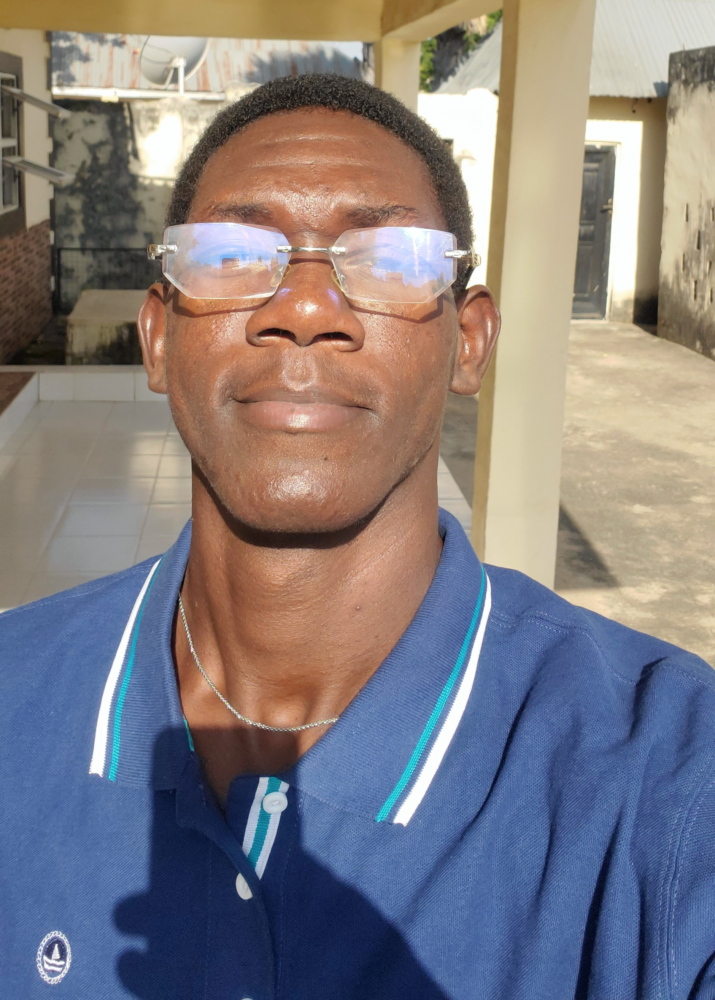

HI.
My name is Pheelimiyan Godfrey Wesley, a 22-year-old native of Jen in Karim-Lamido local Government, Jalingo, Taraba State. Having spent the majority of my life in my hometown, I completed my primary and secondary education there. However, driven by a desire for new experiences and a broader academic horizon, I sought a change of scenery and enrolled at the University of Abuja.
Beyond my academic pursuits, I am a passionate individual with diverse interests. I am a professional basketball player, combining athleticism with a strong competitive spirit. Furthermore, I have a keen interest in the world of fashion, pursuing careers as both a stylist and a model.
My creative expression extends beyond these pursuits. I find solace and inspiration in artistic endeavors such as drawing, dancing, and photography. These hobbies allow me to explore my individuality and connect with the world on a deeper level.
In 2021, I embarked on my academic journey in Computer Science at the University of Abuja, where I am currently in my third year. This has been a period of significant personal and academic growth, characterized by a constant need to adapt and excel.
My involvement in the National Association of Computer Science Students (NAOCSS) as a member has been particularly enriching. This student-led organization provides a unique platform for fostering intellectual curiosity and collaborative learning. Through engaging in inter-university competitions and knowledge-sharing initiatives, NAOCSS has not only sharpened my competitive spirit but also cultivated a strong sense of camaraderie and a deeper understanding of the broader Computer Science community.
The demanding academic environment at the University of Abuja has consistently pushed me beyond my comfort zone. Balancing rigorous coursework with extracurricular activities like NAOCSS requires meticulous time management, effective prioritization, and a strong work ethic. This constant striving for excellence has honed my problem-solving skills, enhanced my ability to adapt to challenging situations, and instilled in me a deep appreciation for the value of perseverance and dedication.
I started drawing when I was a kid, and I really liked it. I’ve been drawing in my free time ever since. I don’t draw as much now as I used to, but it’s still one of my favorite things to do.
I also started dancing when I was a kid. I was actually pretty good at it! I was in a lot of dance groups when I was growing up. I still dance sometimes, but not as much as I used to. It’s kind of hard to do some dances when you’re 6’5” tall. Most dances are made for people who are average height.
After school, sports are a big part of my life. I’ve always been active and enjoyed playing sports. I’m pretty good at a few sports, like soccer, table tennis, badminton, volleyball, and track. But basketball is my favorite. I really hope to play basketball professionally someday, maybe even on an international team. That’s my biggest dream.